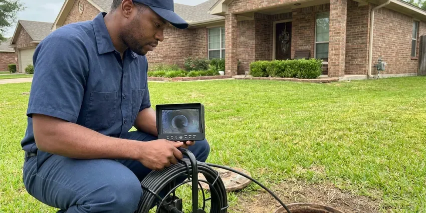

Gas Line Repair in Middletown, CT
Ensuring the safety of your home in Middletown, CT is our priority. GLV Plumbing offers expert gas line repair services, always following strict safety standards.
- Licensed Gas Line Plumbers
- Pressure Tested to Code
- Licensed & Insured Plumbers
- Certified Technicians

Licensed & Reliable Gas Line Repair Services in Middletown, CT.
Our team is ready to address your gas line concerns quickly and effectively.
Professional Gas Line Repair Services in Middletown, CT
GLV Plumbing knows many older homes still have bare or wrapped steel gas lines buried in the yard, and those lines corrode in damp soil over decades. Housing in Connecticut is among the older stock in the country, with many homes still using galvanized supply pipe and original cast iron drains. We repair leaks, replace failing sections and perform the pressure test your utility requires to restore service.
Our expertise includes:
- CSST repair, bonding verification and appliance connector upgrades
- Installation of new gas lines for appliances.
- Installing new gas appliance connections.

Additional Plumbing Maintenance Services in Middletown, CT
Our maintenance and specialty plumbing services in Middletown, CT protect your home year-round and extend the life of every system.


Customers
Why Choose GLV Plumbing for Gas Line Repair in Middletown, CT?
At GLV Plumbing, we understand the critical nature of gas line repairs and put your safety above all else. Our team is trained in the latest safety protocols and uses advanced equipment to ensure every job is completed correctly.
- Code Compliant, Every repair meets the fuel gas code and is pressure tested before service is restored.
- Code Compliance, All gas line repairs are performed according to local Connecticut building codes and safety regulations, ensuring your system is up to standard.
- Safety Focus, Our technicians are trained in gas safety protocols and use specialized equipment to detect and repair leaks the right way.
Citywide Coverage
No matter where you are located in Middletown, CT, our commitment to dependable gas line service extends across the entire metro area. We are your local experts, ready to assist with any gas plumbing need.
Experienced Team
Our technicians have repaired and installed gas piping for years and know the fuel gas code inside and out. They are experienced with black iron, CSST brands like TracPipe and Gastite and polyethylene yard pipe.
Safety-First Approach
Safety is the cornerstone of all gas line repair work at GLV Plumbing. We carry out rigorous safety checks and follow strict procedures to protect your home and family throughout the repair process.
Trusted Certified Middletown Plumbing Services Professionals
At GLV Plumbing, we take pride in providing licensed, certified plumbing services throughout Middletown, CT. Backed by leading industry credentials, our experienced plumbers combine technical skill with genuine customer care. Whether it is repair, installation, or maintenance, we follow strict safety and quality standards to deliver lasting results you can trust.
Call Us Now PHCC Plumbing Contractor Recognition
PHCC Plumbing Contractor Recognition Better Business Bureau (BBB) Accreditation
Better Business Bureau (BBB) Accreditation Angi Certified Pro
Angi Certified Pro ISO 9001 Quality Management Certification
ISO 9001 Quality Management CertificationDependable Gas Line Repair Services in Middletown, CT
Interior Black Iron Pipe Repair in Middletown
Threaded black iron pipe can leak at joints after years of vibration or settling. We tighten, reseal or replace fittings and sections with new pipe and approved thread sealant. Rusted pipe in garages or exterior walls is replaced before it becomes a hazard. We pressure test the system after every repair.

Gas Appliance Line Repair in Middletown, CT
Your gas furnace, water heater, stove, or dryer relies on a working gas line. If you notice issues with a specific appliance, the problem might be with its dedicated gas line. We repair or replace faulty appliance connectors, shut-off valves, and flexible supply lines, making sure all connections are tight and that the correct size and type of line are used for optimal appliance performance and safety in Middletown, CT.
Gas Leak Detection & Repair in Middletown
Suspecting a gas leak is a serious concern, and prompt action is essential. Our technicians use modern gas leak detection equipment, like electronic sniffers and soap solutions, to pinpoint the exact location of a leak in your home in Middletown. Once identified, we perform precise repairs, which can involve patching, replacing sections of pipe, or tightening connections, always keeping the highest safety standards and proper pressure testing after the repair.
Cost of Gas Line Repair in Middletown, CT
The cost of gas line repair in Middletown, CT can vary widely depending on the nature and extent of the damage. Minor repairs, like fixing a loose fitting or replacing a small section of exposed pipe, might range from $250 to $700. More complex issues, such as extensive underground pipe replacement or repairs requiring significant excavation, could cost between $1,000 and $5,000 or more. We always provide a clear, upfront estimate after a thorough inspection.
Emergency Gas Line Shut-Off & Repair in Middletown
A suspected gas leak is an emergency that demands prompt attention. If you smell gas, evacuate immediately and then call 911 and your gas provider to shut off the main supply. Once the area is safe, GLV Plumbing can dispatch a team for emergency gas line repair in Middletown. We put first these urgent calls, working quickly to locate the leak, make the necessary repairs, and confirm your system is safe for restoration of gas service, coordinating with the utility as needed.
Emergency Gas Line Repair in Middletown
Gas leaks are emergencies that require immediate attention. GLV Plumbing offers emergency gas line repair services in Middletown to address urgent situations quickly and safely. Our rapid response team is equipped to handle critical gas line failures, working efficiently to isolate the leak, perform the necessary repairs, and restore safety to your home, often coordinating with the local gas utility when required.
Buried Yard Line Repair and Replacement in Middletown, CT
Many older homes have steel gas lines running from the meter to the house or to a pool heater. Over time the wrap fails and the pipe corrodes, especially where sprinklers keep the soil wet. We call 811 to mark utilities before digging, then replace the line with polyethylene pipe and tracer wire or coated steel where needed. Trenching is backfilled and the yard is cleaned up when we finish.

Gas Appliance Line Installation & Repair in Middletown, CT
Whether you're installing a new gas range, dryer, water heater, or outdoor grill, proper gas line connection is crucial. GLV Plumbing provides professional installation and repair of gas lines specifically for appliances. We ensure correct sizing, secure connections, and code-compliant shut-off valves. If your existing appliance line is leaking or damaged, our technicians in Middletown, CT can quickly diagnose and fix the problem, restoring safe operation.
Gas Leak Repair Near Me in Middletown, CT
When you search for 'gas line repair near me' in Middletown, you want a local company that understands the specific infrastructure and building codes of Connecticut. GLV Plumbing is deeply rooted in the community, providing fast and reliable service to our neighbors. We are always just a call away, ready to dispatch a qualified technician to your location.
We know the older yard lines, CSST systems and soil conditions common in Middletown. That local experience speeds up leak detection and repairs. Your gas service is restored safely and on schedule.
GLV Plumbing at a Glance
- Licensed and insured plumbers serving Middletown, CT
- 24/7 emergency service with same-day scheduling
- Clear written estimates, no hidden fees
- 4.8-star rated by 946+ Connecticut customers
Middletown Map
Middletown Information
- Population
- 47,984
- Area codes
- 860/959/475
- Service area
- Middletown and communities within 40 miles
- Nearby
- Meriden, New Britain, East Hartford, Hartford
Underground gas lines in Middletown, CT can shift and corrode as the ground around them moves, so licensed repair and maintenance are essential for safety. High water tables in low-lying areas of Connecticut can push groundwater into basements during wet seasons and strain sump pumps.
Expert Services
Trust our professionals for reliable GLV Plumbing solutions in Middletown, CT.
Our Specialized Plumbing Services in Middletown, CT
At GLV Plumbing, we provide a complete range of plumbing services across Middletown, CT. From leak detection to full system installations, our team ensures fast, precise, and affordable service for both residential and commercial properties. Explore our core services below:


How Our Gas Line Repair Process Works in Middletown, CT
Here is how we take your system from leaking to safely back in service.
Request a Quote
Call (860) 487-7330 after you have reached safety and contacted your gas utility if you smell gas. We dispatch a licensed plumber as soon as possible.
Locate and Repair
We test the system to find the leak and explain the repair options. After your approval, we replace the damaged pipe or fittings to current code.
Test and Restore
We pressure test the repaired system and arrange inspection when needed. Then we help restore service and relight your appliances.
Frequently Asked Questions About Gas Line Repair in Middletown
The cost for gas line repair in Middletown, CT can range from approximately $250 for minor fixes to $5,000 or more for extensive replacements or repairs requiring excavation. Factors like the leak's location, accessibility, and the type of piping influence the final price. We provide transparent, upfront estimates after a thorough assessment.
Many gas repairs and all new gas piping require a permit and inspection from the local building department. We handle the permit and scheduling on your behalf.
Utilities lock the meter when they find a leak or failed pressure test. A licensed plumber must repair the problem and pass a test before service is restored.
Yes, our gas line repairs include a written warranty on parts and labor. Every repair is pressure tested before we wrap up.
Yes. GLV Plumbing can extend your existing gas line or install a new dedicated line to power outdoor appliances like grills, fire pits, and patio heaters. We make sure of proper sizing, secure connections, and compliance with all outdoor gas line regulations in Middletown, CT for safe and convenient outdoor living.
Common signs of a gas leak include a distinct sulfur or 'rotten egg' smell, a hissing sound near a gas line or appliance, visible damage to a gas pipe, or dying vegetation over an underground gas line. If you notice any of these, evacuate right away and call 911.
Our certified technicians are experienced in working with many types of gas lines, including black iron pipe, flexible corrugated stainless steel tubing (CSST) like Gastite and TracPipe, and polyethylene (PE) pipe for underground applications. We make sure the correct material is used for each specific application according to code.
While specific preventative maintenance for gas lines is less common than for other plumbing systems, we do recommend periodic visual inspections, especially for older homes. During other plumbing service calls, we can often perform a quick check of visible gas lines and connections to identify potential issues before they become emergencies.
What People Are Saying About Our Plumbing Experts?

Sofia M.
Two new toilets installed in one visit, no mess left behind, and the tech even adjusted a faucet he noticed was dripping. Fair pricing and really friendly.
Toilet Installation · East Hartford, CT
Emily R.
I called GLV Plumbing for plumbing repair, and the technician was fast, polite, and thorough. They explained the problem clearly and fixed it the same day. I will definitely hire them again. Highly recommended!
Plumbing Repair · Bristol, CT
Robert G.
The trenchless sewer replacement saved our front yard. They walked us through the camera inspection footage first so we knew exactly what we were paying for.
Sewer Line Replacement · Meriden, CTLaura S.
I scheduled a water heater replacement, and the team made the process smooth and affordable. The new unit works perfectly, and they cleaned up after completing the job.
Water Heater Replacement · West Hartford, CTJames P.
Our commercial plumbing system had a leak under the sink, and GLV Plumbing handled it professionally. The plumbers arrived quickly and restored everything without disruption to our customers.
Commercial Plumbing · Meriden, CT
Patricia H.
We had a slab leak that two other companies could not find. GLV Plumbing located it in under an hour, explained our options, and the price matched the quote to the dollar.
Slab Leak Repair · Bristol, CT